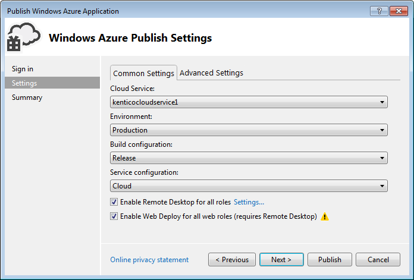

Deploying Azure projects to Cloud Services
After you have prepared the cloud environment, installed an Azure project and configured the project, you can proceed to deploying your project to the Azure Cloud Services.
To deploy an Azure project to the cloud, publish the project directly from Visual Studio to Microsoft Azure Cloud Services.
Deploying the Azure project from Visual Studio to Microsoft Azure
Deploying an Azure project from Visual Studio is a recommended practice. This procedure consists of two parts.
Importing a credentials file
Open your Azure project in Visual Studio.
Right-click the CMSAzure project in the Solution Explorer and select Publish.
Click the Sign in button.
Sign in to the Azure Management Portal and download the credentials file.
The download should start automatically. If not, switch to the Certificates tab, click Import... and click Download subscription file.
Click Import... and select the downloaded file.
Click Next.
Deploying Azure projects to Cloud Services
Configuring the deployment
Select the cloud service you have created (according to the instructions in Preparing the cloud environment).
Choose the Environment:
Production - live environment.
Staging - environment designed for testing the deployed project before promoting it to the production environment. You can swap the production and staging environments easily.
Select the Build configuration:
Debug - includes debugging information.
Release - includes code optimizations and is better suited for live environment.
Select Cloud in the Service configuration drop-down list.
Check Enable Remote Desktop for all roles.
Specify the credentials for connecting to the remote desktop.
[optional] Check Enable Web Deploy for all web roles (requires Remote Desktop).
After you publish your project, this option will allow you to publish changes for the web role directly without having to package or publish the whole project again. See Web Deploy for instructions.
Use Web Deploy only for development and testing purposes and only if you use one web role.

Click Next and check the summary.
Click Publish.
Visual Studio packages your project and uploads the package to the selected Cloud Service. This may take some time (about half an hour).
Continue to Installing the database for Azure projects.